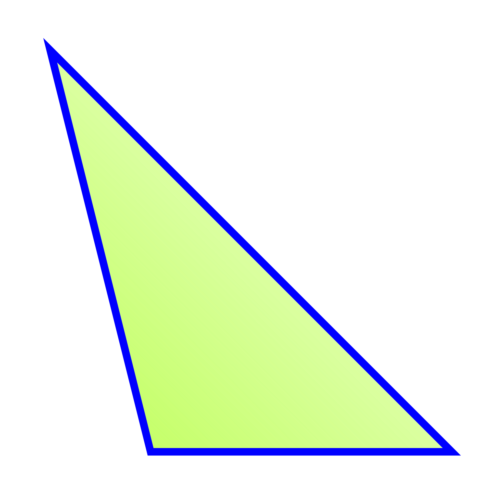

Triangulo obtusangulo
Un triángulo obtusángulo es un triángulo con un ángulo interior
mayor de 90 grados. En geometría, los triángulos se consideran figuras
bidimensionales cerradas con tres lados de igual o diferente longitud
y tres ángulos de igual o diferente medida.
